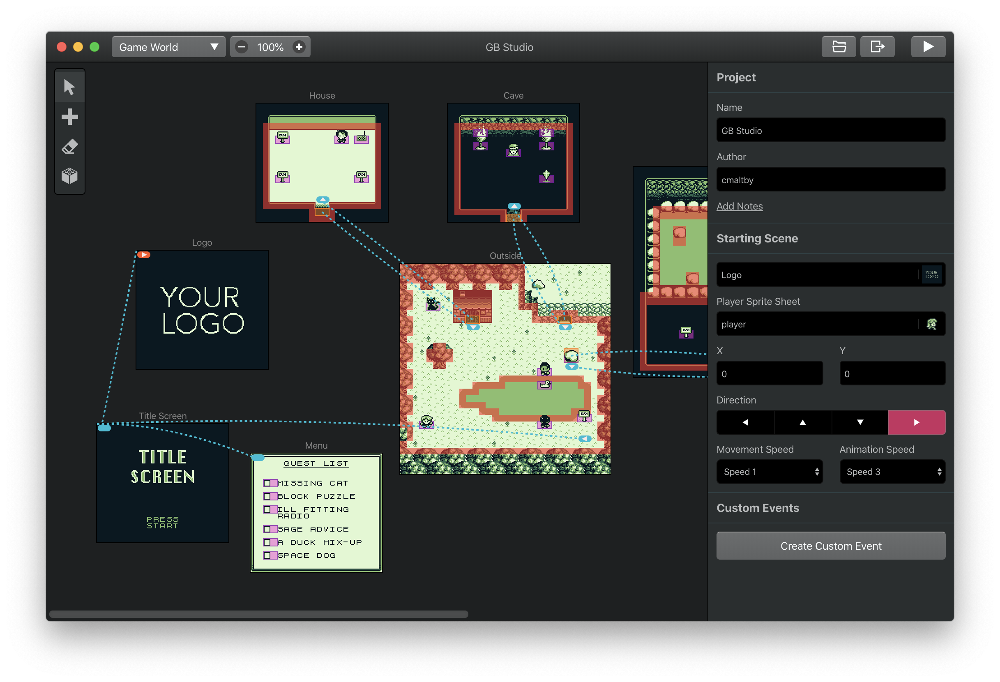

Gameboy games?
As you know, I used to use wick editor which is basicaly just fake adobe flash. But recently I found a new engine to use!
Now I will most likly end up not using it because I have 0 patience when learning new things but oh well. Anyways it is called GB Studio and it lets you create games from the gameboy. But you can also compile them to be .exe's and .html files. So that kinda interests me.
There are 2 main issues right now with wick.
- The loading times are too long
- There are camera issues
- Javascript sucks ass
Now using gbstudio would eliminate most of these issues but create new ones too.
- Compiling takes forever
- You have to make the assets outside of the engine
- You have to use apache for viewing inside of the browser
- Game controls are weird
Now most of these issues are fine. I dont care about most of them. In fact, most of these just affect me. But there is one that I worry about. Because this is meant for making gameboy games, it has weird controls. Jump is CTRL, Bringing up menus and dialongs is SHIFT. Like it is just strange.
Again I am still in the questioning phase right now but I might make the switch. Tell me about what you think in the forums. Anyways I'll see you all later!